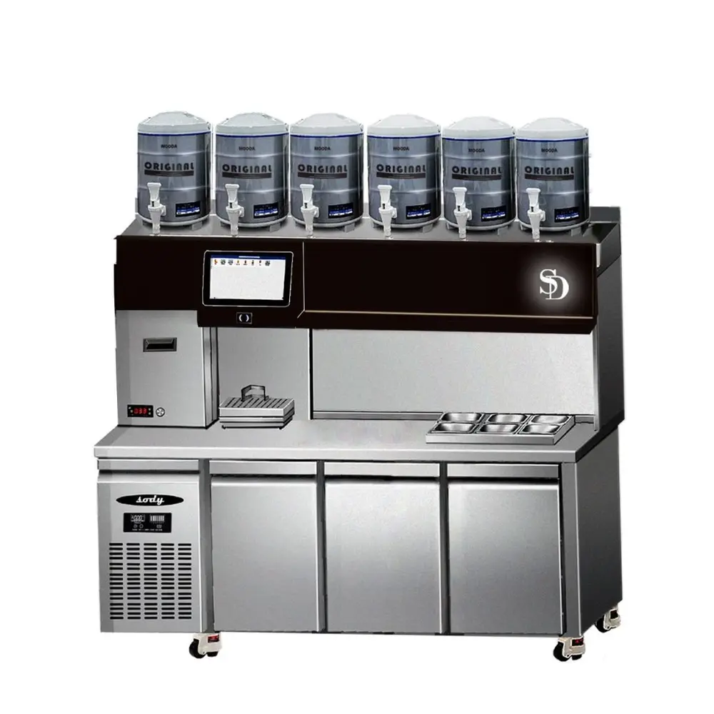
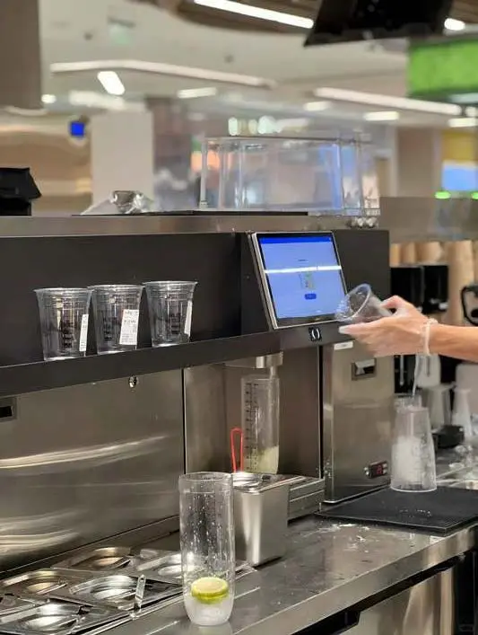
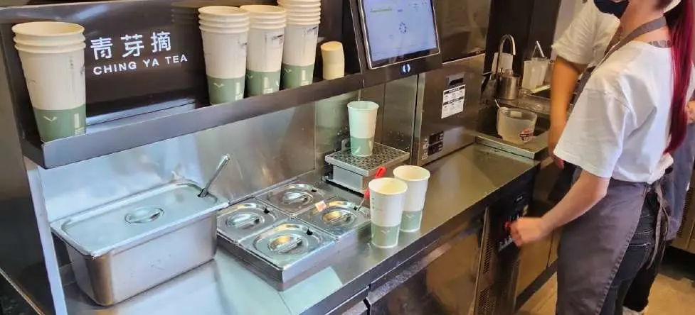
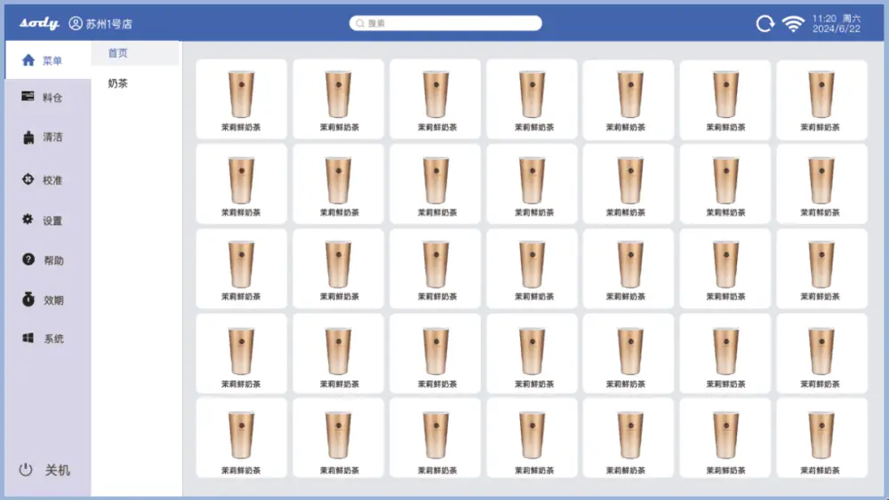

文章 / 飲品配方與資訊
Bubble tea made easy – try our Auto Boba Tea Bar!
這篇是英文原文，尚未完成繁體中文翻譯。中文選單與相關商品連結不會切回英文介面。

查看英文原文（尚未翻譯）
Thinking of expanding your bubble tea business to a full-fledged franchise, but find the idea too daunting? No need to fret, our Auto Boba Tea Bar helps you manage your franchise hassle free.
Read on to learn more!

Why automate?
Bubble tea shops are everywhere in Taiwan, not just mom-and-pop stalls but also large island-wide franchises.
However, some brand owners find it difficult to train enough staff for their branches, or to make sure the quality stays consistent.
For larger franchises, even managing a large menu across many branches is a challenge in itself.
Our Auto boba tea bar is the solution!
Boba Tea Bar Benefits

Easy to use
Our Auto Boba Tea Bar uses a touch-screen interface, putting together a new order is as simple as a few taps.
It also features a built-in QR-code system, bubble tea orders are turned into scannable QR codes. Simply scan in the code, and let the machine handle the rest!

Efficient
No need to fiddle with blenders or brewers, the boba tea bar handles everything quickly for you. How quick? A 700ml drink only needs 10 seconds to make!
Rush hour’s coming up? Worry not, crank up the speed using Turbo Mode!

Consistent
Getting your recipes mixed up? Customers complaining about their drinks tasting different? Now you can put these troubles to bed!
Save your recipes to your boba bar’s online system, and the machine will follow them to a tee. The result? Consistent quality in every cup!

One-stop Management
Our boba bar comes with an online management system, where you can update your menu and recipes, manage your supplies, track your sales, and much more.
Running your franchise can’t get any easier!
Features
POS integration
Touch-screen order placement, with integrated QR code system
Prevent wastage
Dispenses ingredients accurately, with an error margin of under 3%
Supply tracking
Monitors the quantity and expiry dates of ingredients stocks, automatic refill alerts
Hygienic
Manufactured with food-grade materials, with self-cleaning function for nozzles and other parts
Easy to repair
Thanks to its modular design, parts are easy to remove for cleaning or repairs
Cloud management system
Manage recipes, inventory, sales history
and other data online, with
extra data security
Specs
| Components | Tea containers x 6 Fructose dispensers x 2 Chilled ingredients containers x 9 | Dispensing speed | Tea base: 60g/s Fruit juices: 12g/s Sucrose: 30g/s |
| Product Size | 180cm x 76cm x 140cm | Volume | Tea, Fructose: 8L Ingredients: 2.5-5L |
| Voltage | 110V-24V 300W/ Fridge: 220V 50-60 Hz | Power | 1.05KW |
| Fridge temperature | -6 ～ +12 ℃ | Food Safety features | One-key cleaning, automatic descaling, sterilization |
Start automating!
Ready to turn your bubble tea shop to a full-fledged franchise? Make your life easier with our auto boba tea bar!
We’re happy to hear you out, drop us a message to get started!